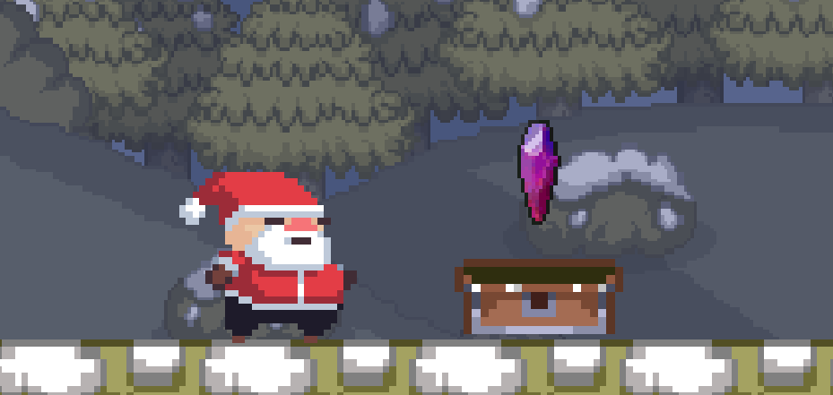

Portfólio
Santa Claus and the purple crystal
- 
Obrigado por jogar! Por conta do prazo e de complicações na engine, alguns bugs não foram resolvidos (ler seção abaixo) Atenção: Bugs conhecidos Ao realizar a transição de level tive um bug que crasha o jogo. Peço a todos que jogarem que não desistam do jogo, abra-o novamente e termine o level em questão Para facilitar, deixei no menu principal botões para cada um dos leveis A medida que eu tomar mais conhecimento da engine estarei resolvendo esse bug na exportação. Esse jogo foi desenvolvido para uma GameJam com prazo de 1 semana. Continuarei trabalhando nesse jogo caso vocês tenham interesse em ver a continuação dessa história...
Baixe aquiSanta Claus and the purple crystal
Obrigado por jogar! Por conta do prazo e de complicações na engine, alguns bugs não foram resolvidos (ler seção abaixo) Atenção: Bugs conhecidos Ao realizar a transição de level tive um bug que crasha o jogo. Peço a todos que jogarem que não desistam do jogo, abra-o novamente e termine o level em questão Para facilitar, deixei no menu principal botões para cada um dos leveis A medida que eu tomar mais conhecimento da engine estarei resolvendo esse bug na exportação. Esse jogo foi desenvolvido para uma GameJam com prazo de 1 semana. Continuarei trabalhando nesse jogo caso vocês tenham interesse em ver a continuação dessa história...
Baixe aquiSanta Claus and the purple crystal
Obrigado por jogar! Por conta do prazo e de complicações na engine, alguns bugs não foram resolvidos (ler seção abaixo) Atenção: Bugs conhecidos Ao realizar a transição de level tive um bug que crasha o jogo. Peço a todos que jogarem que não desistam do jogo, abra-o novamente e termine o level em questão Para facilitar, deixei no menu principal botões para cada um dos leveis A medida que eu tomar mais conhecimento da engine estarei resolvendo esse bug na exportação. Esse jogo foi desenvolvido para uma GameJam com prazo de 1 semana. Continuarei trabalhando nesse jogo caso vocês tenham interesse em ver a continuação dessa história...
Baixe aqui